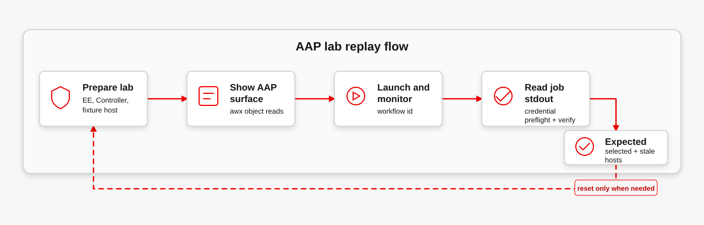

The lab exercise should look like the demo: use AAP for the visible operator path, then fall back to the Calabi playbooks only when preparing or resetting the lab. The result should be obvious in Controller: a synced project, a credential smoke node, a synced IdM inventory, a passing preflight, and a verify job that proves the confined SELinux runtime on the managed host.
Goal
Reproduce the AAP cast from a prepared Calabi lab. The exercise is successful when the workflow launch belongs to blastwall-demo, the workflow nodes complete successfully, preflight shows one selected current host and one stale fixture host, and the verification stdout shows blastwall_u:blastwall_r:blastwall_t:s0 plus blocked BPF, packet_socket, userns, and io_uring probes.
awx for the operator-visible launch and evidence readback.

Prerequisites
- Run from
bastion-01against an already deployed Calabi AAP lab. - The AAP Controller route, IdM server, mirror registry, and managed endpoint must be reachable.
- The local shell should have working
awx,jq, Kerberos tools, and the Controller environment variables used by the lab. - Use the preparation playbooks only to build or reconcile the lab. Use
awxfor the audience-visible replay.
Inputs And Environment Variables
The prepared lab exports Controller access for awx. Use a keytab-backed IdM runtime credential for production-style runs; the Calabi demo can use the password fallback.
export TOWER_HOST='https://controller.example'
export TOWER_USERNAME='blastwall-demo'
export TOWER_PASSWORD='...'
export TOWER_VERIFY_SSL=false
# Prepared by the lab for Controller reconciliation:
export CONTROLLER_HOST="${TOWER_HOST}"
export CONTROLLER_USERNAME='admin'
export CONTROLLER_PASSWORD='...'
export IPA_PRINCIPAL='svc-ansible-runner'
export IPA_KEYTAB='/path/to/svc-ansible-runner.keytab'Procedure
1. Prepare The Lab
Run the Calabi preparation from bastion-01. These playbooks build the execution environment, prepare the demo launcher, and reconcile the public AAP objects.
ansible-playbook poc-calabi/aap/00-aap-readiness.yml
ansible-playbook poc-calabi/aap/05-configure-ee-registry.yml
ansible-playbook poc-calabi/aap/10-build-and-push-ee.yml
ansible-playbook poc-calabi/aap/15-prepare-demo-user.yml
ansible-playbook poc-calabi/aap/20-configure-controller.yml
ansible-playbook poc-calabi/aap/25-seed-selection-fixture.ymlExpected output: the execution environment is available, the demo launcher exists, and Controller contains the Blastwall project, inventory, credentials, and workflow template.
2. Show The AAP Surface
Use awx for the operator-visible part of the exercise. This keeps the demonstration close to AAP instead of hiding the value inside setup playbooks.
awx ping | jq '{controller_version: .version, active_node, capacity: .instances[0].capacity}'
awx me -f human
awx projects list --name Blastwall -f human
awx inventories list --name 'Blastwall IdM Inventory' -f human
awx inventory_sources list --name 'Blastwall IdM Inventory Source' -f human
awx credentials list --name 'Blastwall IdM Runtime' -f human
workflow_template_id="$(awx workflow_job_templates list --name 'Blastwall runtime verification' -f json | jq -r '.results[0].id')"
awx workflow_job_template_nodes list --workflow_job_template "${workflow_template_id}" -f json |
jq -r '.results[] | [.identifier, .summary_fields.unified_job_template.name] | @tsv'Expected output: awx me shows blastwall-demo, and the workflow nodes include project sync, credential smoke, inventory sync, preflight, and managed-host verification.
3. Launch And Read Evidence
Launch the workflow, monitor it, then read the preflight and verification job stdout. The key result is not only that the workflow is green; it is that the selected host proves the SELinux context and denied exploit surfaces.
awx workflow_job_templates launch "${workflow_template_id}" -f json |
tee /tmp/blastwall-aap-launch.json |
jq '{workflow_job, status, launched_by: .launched_by.name}'
workflow_id="$(jq -r '.workflow_job' /tmp/blastwall-aap-launch.json)"
awx workflow_jobs monitor "${workflow_id}"
awx workflow_job_nodes list --workflow_job "${workflow_id}" -f json |
tee /tmp/blastwall-aap-nodes.json |
jq -r '.results[] | [.identifier, .summary_fields.job.id, .summary_fields.job.type, .summary_fields.job.status] | @tsv'
preflight_id="$(jq -r '.results[] | select(.identifier == "preflight") | .summary_fields.job.id' /tmp/blastwall-aap-nodes.json)"
credential_id="$(jq -r '.results[] | select(.identifier == "credential_smoke") | .summary_fields.job.id' /tmp/blastwall-aap-nodes.json)"
verify_id="$(jq -r '.results[] | select(.identifier == "verify_managed_host") | .summary_fields.job.id' /tmp/blastwall-aap-nodes.json)"
awx jobs stdout "${credential_id}" |
grep -E 'credential_smoke|passed|blastwall-ssh'
awx jobs stdout "${preflight_id}" |
grep -E 'All assertions passed|blastwall-root-local-map|blastwall-ssh|blastwall-root-local-sudo|candidate_hosts|selected_hosts|stale_hosts|mirror-registry.workshop.lan|stale-blastwall-01.workshop.lan'
awx jobs stdout "${verify_id}" |
grep -E 'blastwall_u:blastwall_r:blastwall_t:s0|SKIP: could not create AF_ALG socket|Dirty Frag|BLOCKED:'Expected output: the workflow finishes successfully, the selected host is mirror-registry.workshop.lan, the stale fixture is stale-blastwall-01.workshop.lan, and verification prints the confined SELinux context plus blocked probes.
Troubleshooting
- If the workflow name or id changed, resolve it by name with
awx workflow_job_templates list --name 'Blastwall runtime verification'. - If inventory sync fails, rerun the Controller configuration play and confirm the
Blastwall IdM Runtimecredential can authenticate. - If preflight rejects the target, inspect the selected and stale host output before launching another verify job.
- If the verification job is green but output is hard to read, use
awx jobs stdout "${verify_id}"and grep for the SELinux context andBLOCKEDlines.
Expected Output
- Controller reports the
blastwall-demolauncher. - Project sync, credential smoke, IdM inventory sync, preflight, and verify nodes finish successfully.
- Credential smoke proves the injected IdM runtime credential can authenticate and read Blastwall IdM state.
- Preflight shows the SELinux map, HBAC rule, sudo rule,
mirror-registry.workshop.lanas selected, andstale-blastwall-01.workshop.lanas stale. - Verification shows
blastwall_u:blastwall_r:blastwall_t:s0before and after sudo reaches UID 0. - BPF, packet_socket, userns, io_uring, xfrm, and RxRPC probes print
BLOCKED. - AF_ALG may print
SKIPwhen socket creation is denied before the authencesn bind path is reachable.
Cleanup Or Reset
Use reset steps only when the lab should be prepared for another replay. Do not reset between normal evidence reads.
ansible-playbook poc-calabi/aap/20-configure-controller.yml
ansible-playbook poc-calabi/aap/25-seed-selection-fixture.yml